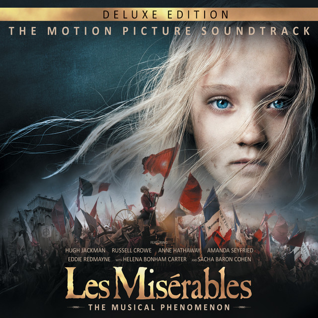
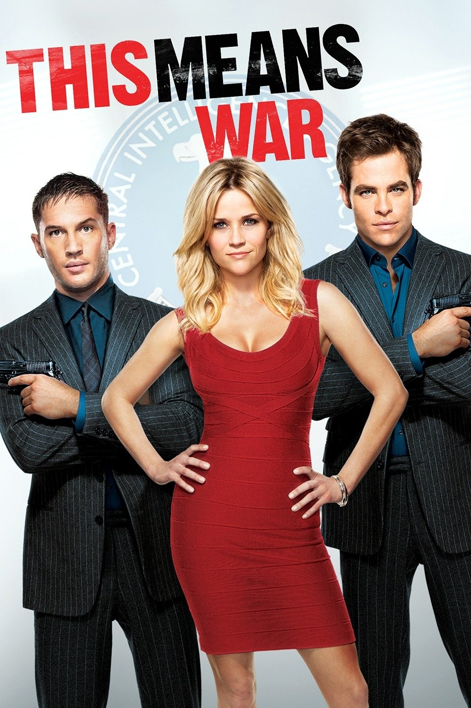
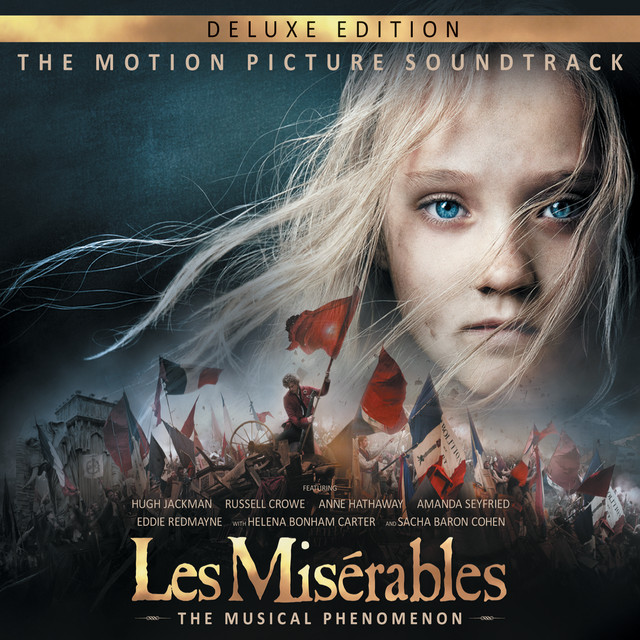
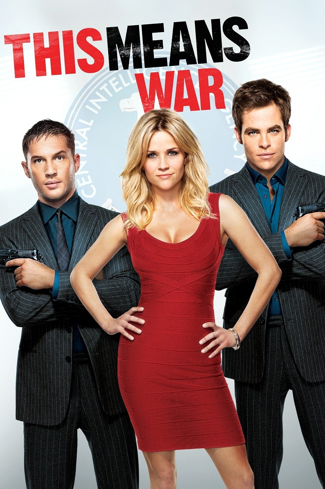

Genre Novel of Manners Run Time 2hr 7min Ratings
In this adaptation of Jane Austen's beloved novel, Elizabeth Bennet (Keira Knightley) lives with her mother, father and sisters in the English countryside. As the eldest, she faces mounting pressure from her parents to marry. When the outspoken Elizabeth is introduced to the handsome and upper-class Mr. Darcy (Matthew Macfadyen), sparks fly. Although there is obvious chemistry between the two, Darcy's overly reserved nature threatens the fledgling relationship.
Genre Historical Fiction Run Time 2hr 38min Ratings
After 19 years as a prisoner, Jean Valjean (Hugh Jackman) is freed by Javert (Russell Crowe), the officer in charge of the prison workforce. Valjean promptly breaks parole but later uses money from stolen silver to reinvent himself as a mayor and factory owner. Javert vows to bring Valjean back to prison. Eight years later, Valjean becomes the guardian of a child named Cosette after her mother's (Anne Hathaway) death, but Javert's relentless pursuit means that peace will be a long time coming.
Genre Romantic Comedy Run Time 1hr 43min Ratings
CIA operatives FDR Foster (Chris Pine) and Tuck (Tom Hardy) are inseparable best friends and partners. Together, their good looks, covert abilities and combat skills rank them among the CIA's elite, but their longstanding personal and professional bond is put to the test when they meet Lauren (Reese Witherspoon). FDR and Tuck both fall hard for the beautiful blonde, turning their deadly skills and an array of high-tech gadgetry against each other in an all-out battle for her love.